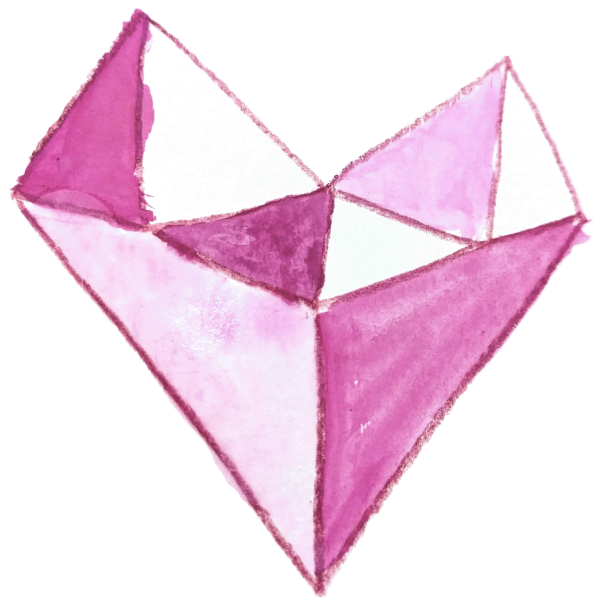

my shattered pieces
your deep fractures—embracing
our love renews us
For a moment
he holds a single glass bead between
fingertips as it catches the sunlight,
luminous with his passion and intent.
Then, steadily, with eyes focused,
brows furrowed, he affixes it to the vast
but unfinished mosaic before him,
bound with an intangible permanence.
Daily he does this.
For five thousand twenty-four days
he has done this.
One bead,
one choice,
to love her.
You oscillate like
the morphing moon while my love
for you stays constant.

This place we’ve made for ourselves, Built from something stronger Than the rickety sticks of our culture. We may not belong anywhere else, But here we fit. We two and our love, With room enough for more. This place we’ve made, Hewn from the warm walls of our hearts. We nestled in, And welcomed the small glowing ones. Appearing one by one, Born of this place. They subtly made it their own. A laugh here, a cuddle there. And now we wonder, How could we have lived without them? We who are here, You and I and the little light-bringers, Perfectly we fit.